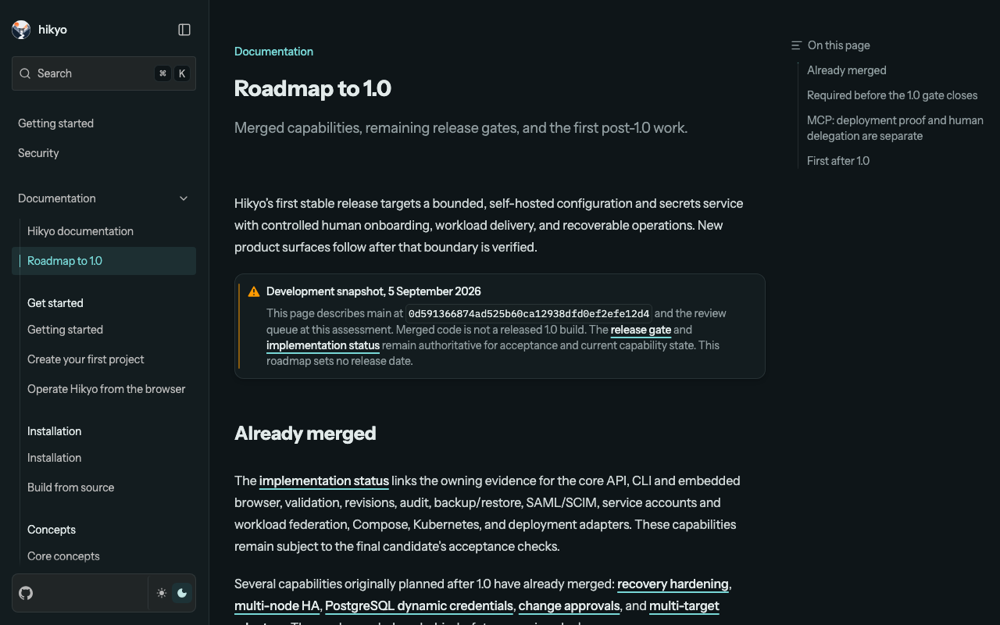
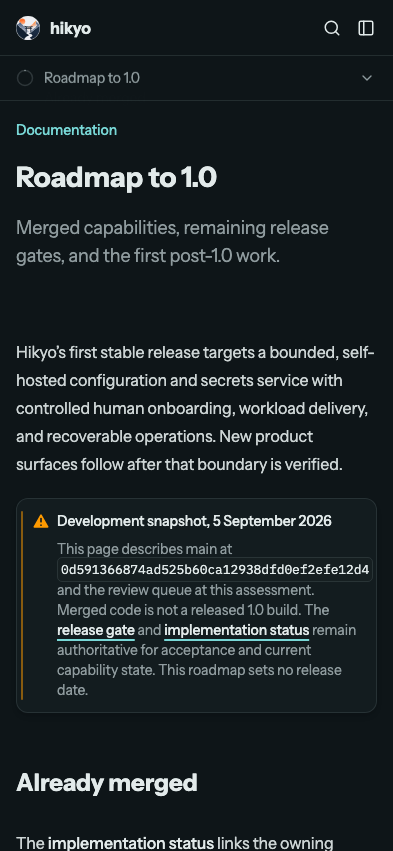

Assessment: 5 September 2026, main 0d591366874ad525b60ca12938dfd0ef2efe12d4. This report records documentation changes and verification; it does not certify 1.0, an unmerged PR, a live named-client result or a stable release tag.
#527 still described #79 as the only remaining work, browser bundle/directory parity as optional, and social registration as promoted into 1.0. Its owner comment instead places social registration first after 1.0 and requires the #617 pre-freeze slice. Current correctness and acceptance work also includes upgrade safety, browser parity, provider proof and resource/recovery evidence. A closed dependency graph is not a release verdict.
/docs/roadmap/ page and documentation navigation distinguish merged capabilities, open PRs, final candidate gates and post-1.0 additions. PRs #642/#643 are recorded as merged; #644 through #650 remain open at the dated assessment.| Question | Options | Choice and reason |
|---|---|---|
| What determines the release lane? | A: supported-product correctness and explicit acceptance. B: issue labels, milestones or an empty dependency graph. | A. It catches real browser, upgrade and external-proof gaps while keeping unrelated new product surfaces out of the first release. |
| How should pending PRs appear? | A: dated implementation queue with live links. B: describe them as released capabilities. | A. Merged code, passing candidate evidence and released artifacts are separate facts. |
| Should social registration or MCP OAuth be added now? | A: preserve the owner's post-1.0 social scope and evidence-led MCP decision. B: treat enterprise self-hosting as an implicit OAuth requirement. | A. Controlled onboarding already exists. #617 preserves pre-freeze compatibility; #631 requires a concrete unmet workflow. #651 remains the separate machine-client/deployment proof gate. |
| Keep future clocks for already merged HA and dynamic credentials? | A: show implemented-on-main with direct guide links. B: preserve stale v1.1 roadmap markers. | A. The owning features and guides are merged. The page states that main-branch implementation is not stable-release certification. |
| Does a roadmap update need a new dependency graph or release version? | A: concise lanes, recorded sequencing and exact pending gates. B: invent new hard blockers or a minor-version commitment. | A. Existing owning issues retain their contracts; this refresh adds no protocol, runtime feature, freeze proof or version promise. |
fnm exec --using 26.7.0 scripts/ci/verify-docs.sh passed in full: pinned install, status ledger and negative fixtures, peer checks, Astro diagnostics (0 errors/warnings/hints), 40-page static build, source/served policy gates, PWA checks, real offline route browser test, disclosure/live-docs fixtures and fallback-channel fixtures. Git diff whitespace check passed. This command's live-docs/fallback fixtures are not fresh external release-candidate channel proof.
Additional Chromium checks passed at desktop 1280x800 and mobile 393x851: roadmap heading and #631/#651 links render, the roadmap has no horizontal page overflow, HA/dynamic markers are included-on-main, rotation is explicitly post-1.0, and both pages emit no JavaScript errors. Assertions.
Desktop documentation route:

Mobile documentation route:

Homepage comparison captures: desktop, mobile. These are local built-site captures, not proof of public deployment.
Signed compatibility metadata and release binding, the applied-release ledger, exact legacy genesis and mandatory migration gates on both engines remain required before 1.0. PR #645 only records governance and retires unsafe apply. Pending #652 covers real Forgejo lifecycle and connection cleanup; pending #653 covers endpoint revision, archived SDK checks and UTC timestamps. These implementations still require final-candidate evidence.
{kind=link}
{kind=link}